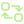

Follow the whole system.
Understand direct agents, composite agents, and their communication paths. Keep each agent’s health distinct from the supporting services it depends on.
Read the health contracts →Know your agents can do the work. A universal health and readiness framework for AI agents, the systems they talk to, and everything they depend on.
Vendor neutral / Framework neutral / Apache 2.0
BEYOND A 200 OK
A running process is only the beginning. Connect agent readiness to capability, protocol, and dependency health with consistent, actionable evidence.
Understand direct agents, composite agents, and their communication paths. Keep each agent’s health distinct from the supporting services it depends on.
Read the health contracts →Bring HTTP APIs, MCP servers, A2A endpoints, gateways, and routers into one health model. Use the Agent Health Protocol to share readiness signals.
Read the health contracts →Trace models, tools, databases, and vector stores through dependency graphs. Turn a collection of individual checks into a meaningful system view.
Read the health contracts →Separate reachability, protocol, configuration, and capability evidence so the next action is clear.
Explore doctor →See how shared dependencies and independent edge policies shape the readiness of a cooperating system.
Understand the graph →Distinguish gateway signals, router backends, and configured communication paths from agent health.
Explore routing checks →Use the same checks locally and in deployment automation, with structured results and predictable exit codes.
Use the CLI →Serve health and readiness through the Agent Health Protocol, with aggregate signals and authenticated detail.
Explore AHP →Extend a vendor-neutral framework with adapter contracts and common health semantics for your ecosystem.
Read the specification →HEALTH ACROSS THE AGENTIC SYSTEM
AgentHealth checks agents and supporting dependencies across your system, collecting the evidence behind one readiness decision.
Ping. Diagnose. Understand.
14 / 14 checks healthyLLMs · inference · model availability
First agent · liveness · readiness
Short-term memory · long-term memory · planning
Downstream agents · capabilities · task probes
Gateway signals · backends · protocol paths

A2A EndpointsAgent discovery · skills · communication
Router signals · named routes · backends
Initialization · tools · resources · prompts
Connectivity · collections · retrieval
Tool discovery · availability · safe invocation
Connectivity · authentication · read readiness
Search APIs · index availability · latency
Frameworks · containers · cloud infrastructure
DNS · TLS · authentication · HTTP status
A SHARED MODEL
From a laptop to a production cluster, use consistent checks and machine-readable results to decide what happens next.
Explore the specification →Endpoint and transport reachability.
Protocol negotiation and compatibility.
Configuration, capabilities, and dependencies.
Explicit, opt-in functional probes.
BUILT TO FIT YOUR WORKFLOW
A portable health engine for terminals, automation, and containerized workloads.
Bring the shared health model into applications and agent frameworks.
Make readiness part of probes, deployment validation, and promotion decisions.
Connect health evidence to telemetry, adapters, and ecosystem conformance.
YOUR FIRST HEALTH CHECK
Download the binary for your platform, verify its checksum, and check an HTTP endpoint you control. No language runtime required.
Installation & verification guide →# Check your installation
./agenthealth version
# Check your local API
./agenthealth ping http http://localhost:8080/health
# Run configured checks and inspect results
./agenthealth check agenthealth.yaml --format json
./agenthealth doctor agenthealth.yamlCreate agenthealth.yaml before running configured checks.
Passive checks first. Active probes opt in. Bounded timeouts, TLS verification, and credential redaction built into the health engine.
PICK YOUR STARTING POINT
Install a binary and learn the core commands.
02 / GUIDEInspect protocol endpoints and capabilities.
03 / GUIDEDefine relationships and readiness policies.
04 / GUIDEStart with sample configurations you can adapt.
OPEN SOURCE, SHARED FOUNDATION
Build an adapter. Improve the specification. Share an integration.
Help make readiness a common language for the agentic ecosystem.